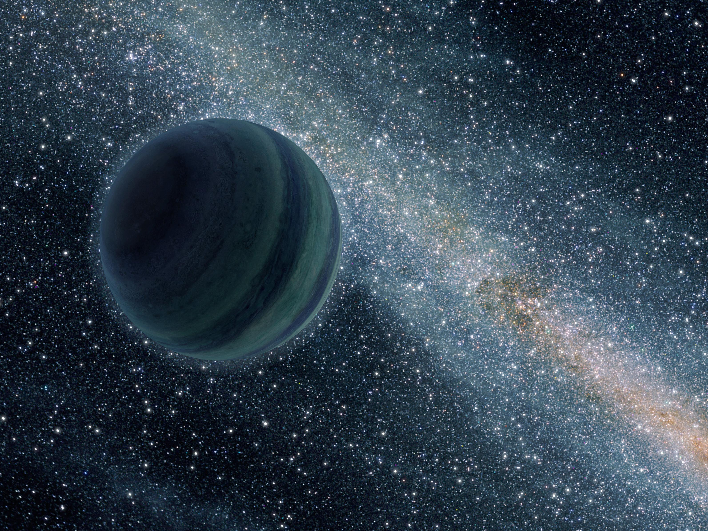

Jupiter-size rogue planet
Overview
Rogue planets, also called free-floating planets, are planet-sized objects that drift through space without being held in place by any star's gravity. Since they give off no reflected starlight and only a small amount of their own light, they're some of the hardest planets to find, and no one knows exactly how many are out there.
How they form
Rogue planets are thought to form in two main ways. Some form around a star like a normal planet, then get thrown out of their system entirely after a close encounter with another planet or a passing star. Others might form on their own, collapsing straight from a small cloud of gas and dust, much like a star does, but without enough mass to start burning like one. Both ways are thought to add to the total number of rogue planets, though which one matters more is still debated.
Detection
Since rogue planets have no star to wobble or dim, they're usually found through gravitational microlensing. This happens when a rogue planet's gravity briefly bends and brightens the light of a much more distant star passing behind it, as seen from Earth. More recently, sensitive infrared surveys have also photographed faint, young rogue planets directly, still glowing with leftover heat from when they formed.
Notable discoveries
In 2023, the James Webb Space Telescope spotted around 40 pairs of free-floating, Jupiter-mass objects in the Orion Nebula, nicknamed JuMBOs. Finding them in pairs like this is hard to explain through normal planet formation or ejection alone. Microlensing surveys such as OGLE have also found evidence for a large number of Earth- to Jupiter-mass rogue planets scattered across the galaxy.
How many are there?
Some early microlensing studies suggested rogue planets could outnumber ordinary stars in the Milky Way by a wide margin, though later surveys with better data have generally found smaller, though still large, numbers. Much of the uncertainty comes down to how short and hard to catch these microlensing events are, and how many rogue planets are simply too faint or too far away for today's instruments to find.
Habitability speculation
Without a star nearby, a rogue planet's surface would get almost no outside heat. Even so, some scientists have wondered whether larger rogue planets, ones with strong internal heat, a thick insulating atmosphere, or a hidden ocean kept liquid by heat from inside, could stay livable in theory. This would work a bit like how some icy moons in the Solar System are thought to hold hidden oceans far from the Sun's warmth.